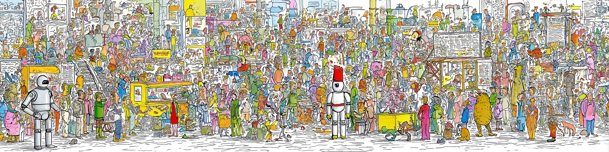

SQL SELECT

If you think you understand SQL, you’re probably wrong.
— C. J. Date
Tabellen mit SQL analysieren
Zielbild
In S12 haben wir ein Schema entworfen. In S13 fragen wir dieses Schema ab. Das Lernziel ist heute nicht, möglichst viel SQL-Syntax auswendig zu lernen. Das Lernziel ist: Anforderungen in eine Abfrage übersetzen lassen und dann systematisch prüfen, ob das Ergebnis stimmt.
Der Uebergang ist wichtig: Ein gutes Schema ist die Voraussetzung dafuer, dass JOIN-Bedingungen spaeter eindeutig formuliert werden koennen. Heute wechseln wir also von der Strukturfrage zur Nutzungsfrage: Welche fachliche Antwort soll aus den Tabellen wieder herauskommen?
Von S12 zu S13
- S12: Schema entwerfen
- S13: Fragen an das Schema stellen
- Fokus:
SELECT,WHERE,JOIN - SQL ist Werkzeug, nicht Selbstzweck
Agentischer Workflow: SQL ist das Ergebnis des Schritts generate. Unsere Aufgabe ist verify: Passt die Ergebnistabelle wirklich zur Anforderung?
Daten Nach SQLite
Für kleine lokale Beispiele reicht SQLite völlig aus. Mit pandas können wir tabellarische Daten direkt in eine Datenbankdatei schreiben und danach mit SQL abfragen.
Tabellen in SQLite speichern
pandaslädt CSV-Daten als DataFramesqlite3legt eine lokale Datenbankdatei anto_sql(...)speichert Tabellen ohne eigenen Server
import pandas as pd
import sqlite3
con = sqlite3.connect("messungen.sqlite")
stations.to_sql("stations", con, if_exists="replace", index=False)
sensors.to_sql("sensors", con, if_exists="replace", index=False)
measurements.to_sql("measurements", con, if_exists="replace", index=False)Grundmuster
Die meisten praktischen Anfragen bestehen aus drei Fragen:
- Welche Spalten brauche ich?
- Aus welchen Tabellen kommen sie?
- Welche Bedingungen müssen erfüllt sein?
Das Grundmuster von SELECT
SELECT spalten
FROM tabelle
WHERE bedingungSELECT: Welche Informationen sollen zurückkommen?FROM: Wo liegen diese Informationen?WHERE: Welche Zeilen sollen übrig bleiben?
Beispiel: Auswahl einzelner Spalten
SELECT station_id, measured_at, pm25
FROM measurements- keine Berechnung, nur Projektion
- weniger Spalten = leichter zu prüfen
- oft der beste Startpunkt beim Debuggen
Beispiel: Filtern mit WHERE
SELECT station_id, measured_at, pm25
FROM measurements
WHERE pm25 > 50- Bedingungen mit
=,>,< - kombinierbar mit
AND,OR,NOT - fachliche Frage zuerst formulieren, Syntax danach
Tabellen Verbinden
Viele Informationen liegen nicht in einer einzelnen Tabelle. Genau deshalb haben wir in S12 Primär- und Fremdschlüssel eingeführt: JOIN verbindet Messungen mit Sensoren und Stationen.
Warum JOIN?
measurements: Wert und Zeitpunktsensors: welcher Sensortyp?stations: an welchem Ort?- eine fachliche Antwort braucht oft Daten aus allen drei Tabellen
JOIN mit Schlüsseln
SELECT st.name, se.sensor_type, m.measured_at, m.pm25
FROM measurements AS m
JOIN sensors AS se ON m.sensor_id = se.sensor_id
JOIN stations AS st ON se.station_id = st.station_idASmacht lange Namen lesbarerONnennt explizit die Verknüpfungsbedingung- besser lesbar und sicherer als implizite Kreuzprodukte
Agentischer Workflow: Wenn AI einen
JOINerzeugt: 1. Prüfe erst die Schlüsselpaare inON. 2. Zähle grob, wie viele Zeilen du erwartest. 3. Achte auf Duplikate durch falsche Verknüpfungen.
Prompting Für SQL
Gute Prompts für SQL enthalten drei Bausteine:
- Schema: Tabellen, relevante Spalten, Schlüssel
- gewünschtes Ergebnis: welche Spalten, welche Reihenfolge
- Bedingungen: Filter, Zeitraum, Sortierung
Ohne Schema rät das Modell. Mit Schema arbeitet es deutlich zuverlässiger.
Prompting-Muster
- Nenne die Tabellen mit Schlüsseln.
- Beschreibe das gewünschte Ergebnis.
- Formuliere Filter und Sortierung explizit.
Schema:
stations(station_id, name)
sensors(sensor_id, station_id, sensor_type)
measurements(measurement_id, sensor_id, measured_at, pm25)Ein guter SQL-Prompt
Gegeben sind:
stations(station_id, name)
sensors(sensor_id, station_id, sensor_type)
measurements(measurement_id, sensor_id, measured_at, pm25)
Erzeuge eine SQLite-SQL-Abfrage, die alle PM2.5-Messungen über 50 µg/m³
aus den letzten 30 Tagen zurückgibt. Ausgabe: Stationsname, Zeitstempel,
PM2.5-Wert. Sortiere nach Stationsname und dann nach Zeitstempel.Mögliche AI-Antwort
SELECT st.name, m.measured_at, m.pm25
FROM measurements AS m
JOIN sensors AS se ON m.sensor_id = se.sensor_id
JOIN stations AS st ON se.station_id = st.station_id
WHERE m.pm25 > 50
AND m.measured_at >= datetime('now', '-30 days')
ORDER BY st.name, m.measured_at- sieht plausibel aus
- aber Plausibilität ist nicht genug
- jetzt beginnt der wichtige Teil: prüfen
Verifikation
Die Verifikation folgt genau derselben Idee wie in S08 bei Unit-Tests: Wir konstruieren einen kleinen Fall mit bekannter Soll-Antwort. Nicht der Querytext ist der Testgegenstand, sondern das Ergebnis.
Nicht durch Lesen vertrauen
- SQL kann korrekt aussehen und trotzdem falsch sein
- besonders riskant: falscher
JOIN, falscher Zeitraum, falsche Sortierung - deshalb: bekannte Testdaten vor unbekannten Echtdaten
Mini-Datensatz mit bekannter Lösung
Stations
| station_id | name |
|---|---|
| 1 | Warnemuende |
| 2 | Innenstadt |
Sensors
| sensor_id | station_id | sensor_type |
|---|---|---|
| 10 | 1 | PM2.5 |
| 20 | 2 | PM2.5 |
Measurements
| measurement_id | sensor_id | measured_at | pm25 |
|---|---|---|---|
| 100 | 10 | 2026-06-10 | 55 |
| 101 | 10 | 2026-05-01 | 80 |
| 102 | 20 | 2026-06-11 | 42 |
| 103 | 20 | 2026-06-12 | 65 |
Erwartet
Warnemuende, 2026-06-10, 55
Innenstadt, 2026-06-12, 65
Prüfung wie ein Unit-Test
- kleinen Datensatz mit bekannter Soll-Ausgabe bauen
- AI-SQL genau darauf ausführen
- Ergebnis mit Soll-Ausgabe vergleichen
- erst dann auf echte Daten loslassen
Verbindung zu S08: Das ist fachlich ein Testfall mit erwarteter Ausgabe.
- fuer den Testfall ersetzen wir
datetime('now', '-30 days')durch einen festen Stichtag - so bleibt die erwartete Ausgabe reproduzierbar
Verifikation in Python
sql = """
SELECT st.name, m.measured_at, m.pm25
FROM measurements AS m
JOIN sensors AS se ON m.sensor_id = se.sensor_id
JOIN stations AS st ON se.station_id = st.station_id
WHERE m.pm25 > 50
AND m.measured_at >= '2026-05-15'
ORDER BY st.name, m.measured_at
"""
result = pd.read_sql(sql, con)
expected = pd.DataFrame(
{
"name": ["Innenstadt", "Warnemuende"],
"measured_at": ["2026-06-12", "2026-06-10"],
"pm25": [65, 55],
}
)Leichte Erweiterungen
Heute reicht ein Überblick über einfache Aggregation. Für viele technische Anfragen genügen COUNT, SUM, AVG, MIN, MAX. Komplexere SQL-Konstrukte sind wichtig, aber nicht unser Schwerpunkt in diesem Kurs.
Wichtig ist vor allem die Idee hinter GROUP BY: Mehrere Zeilen werden zu fachlich sinnvollen Gruppen zusammengefasst, und pro Gruppe berechnen wir Kennwerte. Dazu kommen zwei alltagstaugliche Erweiterungen: Ergebnisse bewusst sortieren und die Ausgabe auf wenige Zeilen begrenzen.
Gruppen bilden mit GROUP BY
SELECT station_id
FROM measurements
GROUP BY station_id- bildet eine Gruppe pro
station_id - erst die Gruppen, dann die Kennwerte
- fachlich fragen: Nach welchem Merkmal soll zusammengefasst werden?
Aggregation leichtgewichtig
SELECT station_id, AVG(pm25), MAX(pm25)
FROM measurements
GROUP BY station_id- behalten:
COUNT,SUM,AVG,MIN,MAX - genug für viele Ingenieurfragen
- prüfen: Sind Gruppen und Kennwerte fachlich plausibel?
Referenz: Sortieren und Begrenzen
SELECT station_id, pm25
FROM measurements
ORDER BY pm25 DESC
LIMIT 5ORDER BY: Reihenfolge festlegenLIMIT: nur die ersten Zeilen zurückgeben- heute nur als Nachschlagewissen
Zusammenfassung
SQL ist in diesem Kurs kein Selbstzweck, sondern ein Werkzeug fuer fachliche Fragen an tabellarische Daten. Entscheidend ist nicht, ob eine Abfrage elegant aussieht, sondern ob sie mit bekanntem Schema, sauberem Prompting und einer kleinen Verifikation nachvollziehbar zum richtigen Ergebnis fuehrt.
SQL in diesem Kurs
- SQL stellt Fragen an relationale Tabellen
- AI kann die Abfrage oft schneller schreiben als wir
- wir müssen Ergebnis, Schlüssel und Randfälle prüfen
Wichtigste Werkzeuge
SELECTfür SpaltenWHEREfür BedingungenJOINfür mehrere Tabellen- einfache Aggregation für Kennwerte
Vorgehen für die Praxis
- Anforderung fachlich formulieren
- Schema im Prompt angeben
- AI-SQL erzeugen lassen
- auf kleinem bekannten Datensatz verifizieren
- erst dann auf echte Daten anwenden